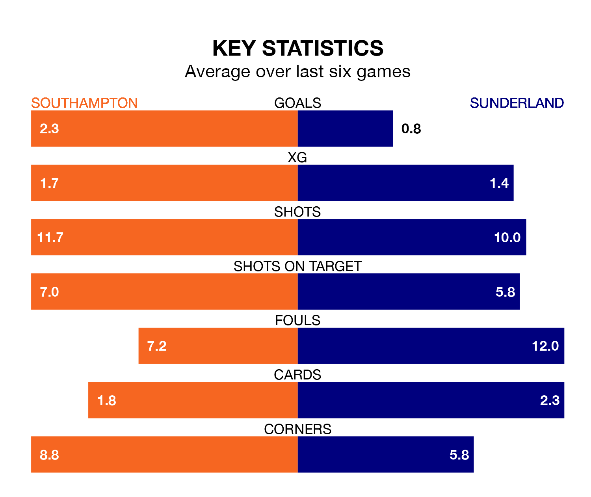

Southampton face a challenge to maintain their high-scoring form at home against a tight Sunderland defence on Saturday.
With 69 goals in 35 games, Southampton are the third-highest scorers in the EFL Championship ahead of the 3pm kick-off at St. Mary's.
They face a Black Cats side who have scored 46 in 36 matches, but conceded only 41 goals, putting them fourth among the league's tightest defences – only Leicester City, Leeds United and West Bromwich Albion have conceded fewer goals.
In Adam Armstrong, Southampton have one of the league's most on-form strikers so far this season. He has notched 17 goals in 35 appearances, to sit second in the scoring charts.
His goal rate of one every 171 minutes is quicker than that of Jack Clarke, Sunderland's top scorer with a goal every 195 minutes, and a total of 15 goals in 33 games.
The Saints are in mixed form in the EFL Championship, with three wins and three losses from their last six games.
With a win and five losses over that period, the Black Cats's form is much worse – they have taken three points from 18, compared to the hosts' nine.
In the last 10 years, Southampton and Sunderland have played each other on eight occasions. Southampton won four of them, Sunderland two, and they drew twice.
On average, the Saints scored 2.1 goals and the Black Cats 1.1 in those matches.
Their last meeting was on September 2, when Sunderland won 5-0 at home.
Southampton are fourth in the table after 35 games, of which they have won 21 and drawn seven, earning 70 points.
The away team are seven places behind Southampton in 11th, with 14 wins and five draws putting them on 47 points.
Southampton's last match was on March 2, a 4-3 win against Birmingham City, with Adam Armstrong, Che Adams, David Brooks and Joe Aribo getting the goals for the Saints.
Sunderland lost 1-0 against Leicester City last time out, on Tuesday.
Saturday's match will be refereed by Stuart Attwell, who has taken charge of one EFL Championship game so far this season, issuing no red cards and booking five players. He has awarded one penalty.
He is yet to oversee a match featuring either Southampton or Sunderland this season.
Updated: 09:34 (UTC), 08/03/24